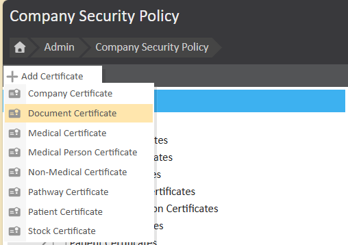

Security Policies govern different aspects of data security in Meddbase. Each policy type (or certificate) governs a set of user permissions.
These permissions determine if or how users will be able to interact with data protected by a given policy or certificate, e.g. Company record protected by a Company Policy; Patient record protected by a Patient Policy.
Many permissions need to be used in conjunction with permissions governed by other certificates e.g. Company Certificate(s) or Document Certificate(s).
Meddbase applies default certificates automatically. However, additional certificates can be created to segment entities and assign different permissions for specific purposes. This allows for greater control over access to various system elements.
This article will explain the use cases for additional certificates and how to create them.
Creating additional certificates enables you to define access restrictions more precisely. For example:
Documents – You can create a new certificate for Master documents that only select users can access.
Patients – You may set up separate certificates to manage different patient groups with unique access permissions for your users.
In order to add a new certificate, navigate to the ‘Security Policy’ page (Start Page > Admin > Security Policy) and click the ‘Add Certificates’ button.
Please note, depending on the features enabled in your chamber, you may not have all the same certificates as you see in the screenshot below.

You will be prompted to choose which certificate type you would like to add, select the type and your new certificate will be created.
You will then need to configure the permissions on that certificate.